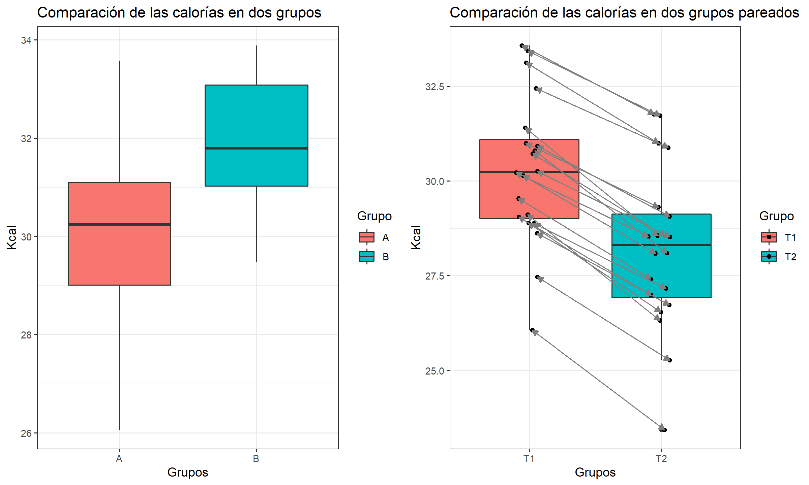
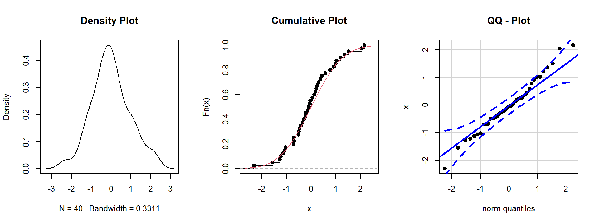
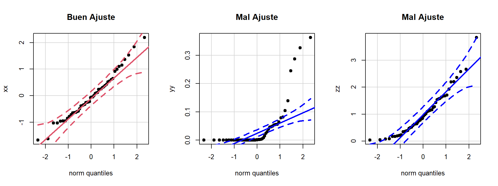
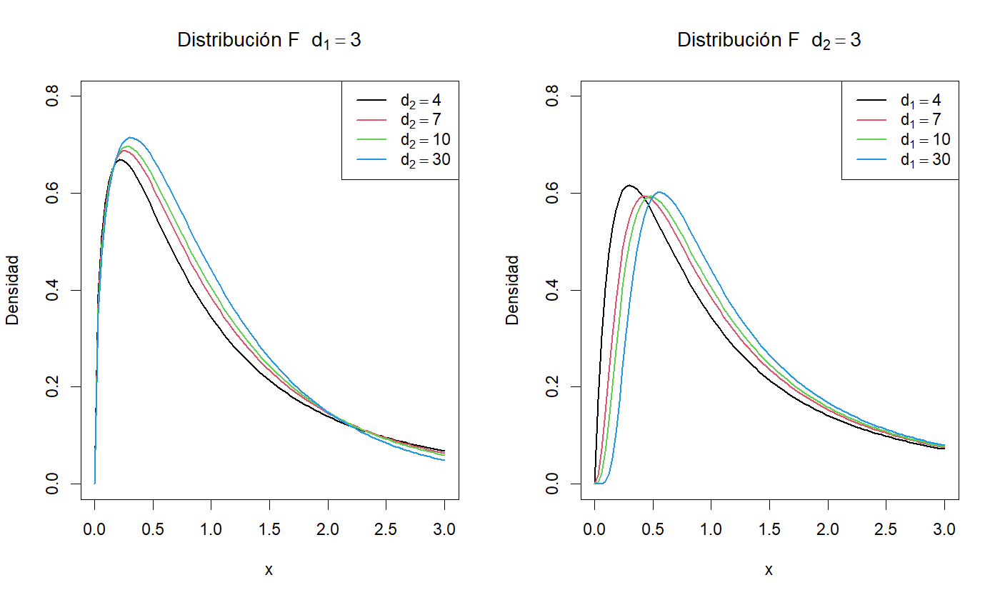
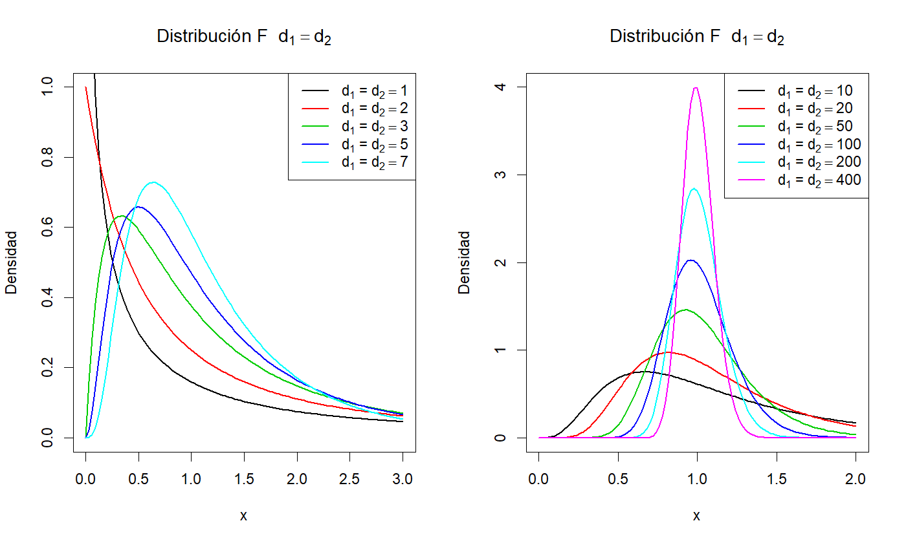
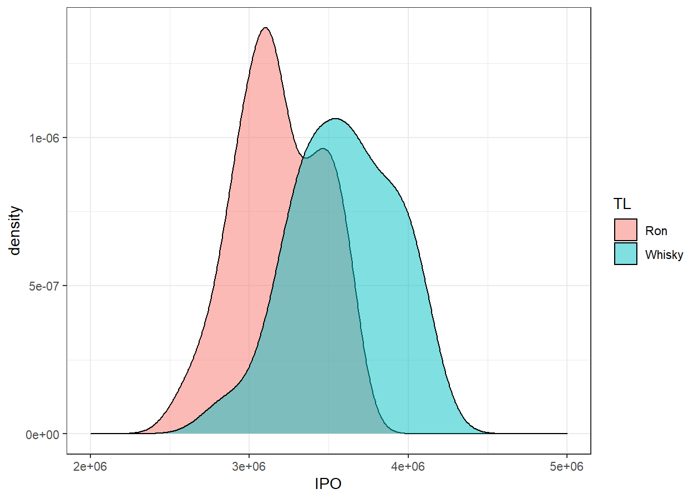
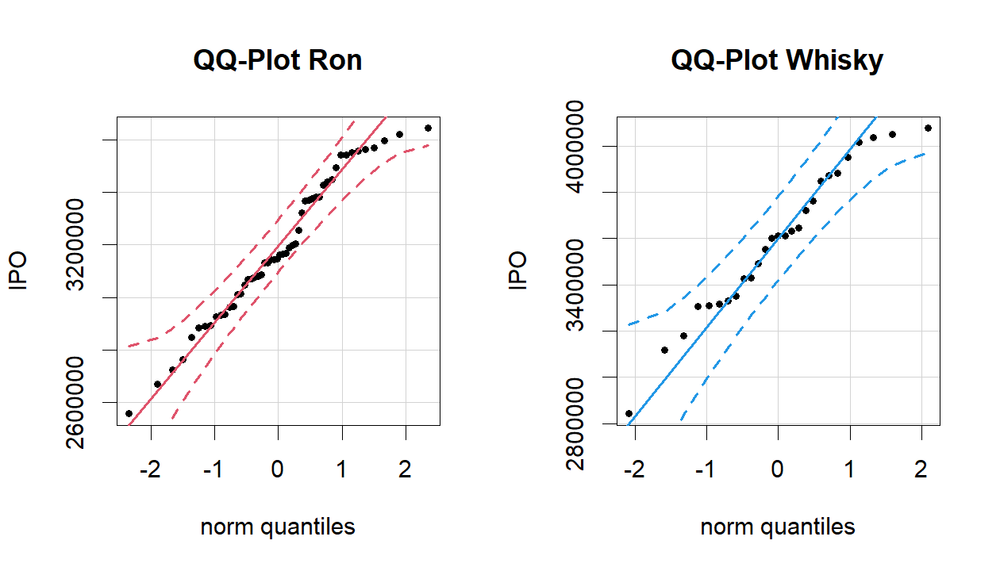

Intervalos de Confianza para dos grupos
Inferencia comparación de grupos
Hasta ahora se ha realizado estimaciónes y verificaciones de hipótesis para un parámetros. Ahora, el interés es comparar dos grupos, es decir, comparar una característica común pero que se diferencian en dos estados distinos y que no existen otras condiciones adicionales que diferencien las dos muestras.
Para estos casos se presentan dos situaciones, que las muestras sean independientes o que las muestras sean pareadas, es decir, que es el seguimiento de un solo individuo en el cambio de estado (tiempo, área, condición).

Dada estas situaciones entonces surge la pregunta ¿Existe diferencia significativa entre los dos grupos? Para responder esta peregunta tenemos dos procedimientos para llegar a la respuesta:
- Intervalos de confianza
- Pruebas de hipótesis
Intervalo de confianza para la diferencia de proporciones
A menudo se tiene interés en conocer la magnitud de la diferencia entre las proporciones de dos poblaciones. Es posible que se quiera comparar, por ejemplo, entre hombres y mujeres, dos grupos de edades, dos grupos socioeconómicos o dos grupos de diagnóstico con respecto a la proporción que posee alguna caractenstica de interés.
Se tienen \(X_1,\dots,X_n\) y \(Y_1,\dots,Y_n\) dos muestras aleatorias cada una pertenecientes a una distribución binomial \(X\sim bin(n_1,p_1)\) y \(Y\sim bin(n_2,p_2)\). Un estimador puntual insesgado de la diferencia entre dos proporciones de las poblaciones se obtiene al calcular la diferencia de las proporciones de las muestras \(\hat{p_1}-\hat{p_2}\). Tal como se ha visto, cuando \(n_1\) \(n_2\) son de gran tamano y las proporciones de la población no estan muy cerca de \(0\) o de \(1\), es posible aplicar el teorema central del limite y utilizar la teoría de la distribución normal para obtener los intervalos de confianza.
El error estándar de la estimación se calcula mediante la siguiente formula:
\[\Large\hat{\sigma}_{\hat{p_1}-\hat{p_2}}=\sqrt{\frac{\hat{p_1}(1-\hat{p_1})}{n_1}+\frac{\hat{p_2}(1-\hat{p_2})}{n_2}}\]
Entonces un intervalo de confianza al \(100(1-\alpha)\%\) para \(p_1-p_2\) se obtiene de:
\[(\hat{p_1}-\hat{p_2})\,\pm\,Z_{1-\alpha/2}\sqrt{\frac{\hat{p_1}(1-\hat{p_1})}{n_1}+\frac{\hat{p_2}(1-\hat{p_2})}{n_2}}\]
Entonces cuando el intervalo contenga el valor \(0\) significa que los grupos son estadística mente iguales, eso se debe a: \[p_1 - p_2 = 0 \quad \rightarrow \quad p_1=p_2\]
Intervalo de confianza para la diferencia de medias
El procedimiento de compar grupos a través de los medias estimadas, similar a estimar un solo parámetro, requiere de una serie de evaluaciones para seleccionar el método correcto de acuerdo al comportamiento de los datos.
- Verificar que los datos distribuyen normal o no.
- Verificar si los tamaños de cada muestra son suficientemente grandes.
- Verificar si las varianzas de cada muestra son iguales o no.
- Seleccionar el método de estimación.
Verificación de la normalidad
El primer paso se realiza a través de los métodos de Pruebas de Hipótesis que se abordará en el siguiente capítulo, no obstante de acuerdo a las propiedades de la Distribución Normal se puede realizar una inspección gráfica.

Estos tres gráficos nos ayudarán para explorar el comportamiento de los datos y se pueden combinar con los gráficos de las distribuciones teóricas para evaluar qué tanto se parecen.
El primer gráfico se llama Gráfico de Densidad, muestra cómo es la distribución empírica de probabilidad, a diferencia del Histograma es una buena aproximación de las distribuciones continuas.
El segundo gráfico se llama Gráfico Densidad Acumulada Empírica, este gráfico es muy útil cuando se compara con La densidad acumulada de las distribuciones teóricas. Además, el gráfico muestra el salto de cada muestra en la función de densidad acumulada empírica.
El tercer gráfico se llama Gráfico de Comparación de Cuantiles, contrasta las muestras con los cuantiles de la distribución teórica. La ventaja de este gráfico es que dibuja una recta en la cual se espera que el conjunto de datos se ajuste, además dibuja bandas de confianza para mostrar hasta dónde se puede considerar que los puntos se ajustan a la recta.

La idea de este gráfico es que los puntos estén muy cercanos a la recta y entre los límites de confianza. Hay que tener cuidado en los extremos de las muestras, ya que algunos puntos pueden salir de las bandas pero esto no significa que no tengan la distribución que se está evaluando; si la mayoría de los puntos están ajustados a la recta y son muy pocos datos en los extremos que salen de las bandas, se puede considerar un buen ajuste.
Pruebas de igualdad de Varianza
Otro paso importante es verificar si las varianzas de ambos grupos son iguales o no, esto es importante porque la intención de la comparación de grupos a partir de la diferencia de promedios solamente debe comparar un factor o grupo que diferencia las muestras. La presencia de variabilidad excesiva en una de las muestras indicaría que existe otra condición no analizada que puede afectar la comparación, sin embargo, es posible controlar este problema estimando una variación conjunta entre los dos grupos.
La comparación de dos varianzas se realiza a través de su razón, \(\sigma_1/\sigma_2\) si las varianzas son iguales entonces la razón será \(1\). Por lo general, las variancias de las poblaciones son desconocidas y, en consecuencia, toda comparación que haga deberá basarse en las variancias de las muestras. Basado en el Teorema Central del Límite se puede demostrar que la razón de dos varianzas tiene una distribución F de Snedecor. Entonces un intervalo de confianza para la razón de varianzas está dado por:
\[F_{(\alpha/2,n_1-1,n_2-1)}<\cfrac{S^2_1/\sigma^2_2}{S^2_2/\sigma^2_2}<F_{(1-\alpha/2,n_1-1,n_2-1)}\\\\ F_{(\alpha/2,n_1-1,n_2-1)}<\cfrac{S^2_1}{S^2_2}\times\cfrac{\sigma^2_2}{\sigma^2_1}<F_{(1-\alpha/2,n_1-1,n_2-1)}\\\\ \cfrac{F_{(\alpha/2,n_1-1,n_2-1)}}{S^2_1/S^2_2}<\cfrac{\sigma^2_2}{\sigma^2_1}<\cfrac{F_{(1-\alpha/2,n_1-1,n_2-1)}}{S^2_1/S^2_2}\\\\ \cfrac{S^2_1/S^2_2}{F_{(\alpha/2,n_1-1,n_2-1)}}>\cfrac{\sigma^2_1}{\sigma^2_2}>\cfrac{S^2_1/S^2_2}{F_{(1-\alpha/2,n_1-1,n_2-1)}}\]
Un intervalo al \(100(1-\alpha)\%\) para \(\sigma^2_1/\sigma^2_2\) está dado por:
\[\cfrac{S^2_1/S^2_2}{F_{(1-\alpha/2,n_1-1,n_2-1)}}<\cfrac{\sigma^2_1}{\sigma^2_2}<\cfrac{S^2_1/S^2_2}{F_{(\alpha/2,n_1-1,n_2-1)}}\]

En el primer gráfico se evidencia cómo el parámetro \(d_2\) determina la altura de la densidad cuando el parámetro \(d_1\) está fijo, mientras que en el segundo se ve cómo el parámetro \(d_1\) mueve la distribución en el eje \(x\) de forma positiva cuando el parámetro \(d_2\) está fijo.

Cuando los parámetros de la distribución son iguales se nota que para valores \(<3\) la distribución tiene tendencia exponencial, y aparece de forma notable la varianza con parámetros \(d1=d2\geq4\). Por otra parte, si ambos parámetros son muy grandes, en el límite la distribución se transforma en una distribución degenerada en \(x=1\).
Resumen

Con:
\[SP=\sqrt{\cfrac{(n_1-1)S^2_1+(n_2-1)S^2_2}{n_1+n_2-2}}\] y
\[\large v= \cfrac{\left(\frac{S^2_1}{n_1}+\frac{S^2_2}{n_2}\right)^2}{\frac{\left(\frac{S^2_1}{n_1}\right)^2}{n_1-1}+\frac{\left(\frac{S^2_2}{n_2}\right)^2}{n_2-1}}\]
Ejemplo práctico
La siguiente base de datos contiene información acerca de incautaciones de bebidas alcohólicas fraudulentas y de contrabando en la ciudad de Medellín en un mes, que afectan los recursos para Salud y Educación en el Departamento de Antioquia y de acuerdo a los resultados se toma decisiones para aumentar o disminuir los controles.
La base de datos contiene las variables - TL (Tipo de Licor) - PI (Precio de incautación: se refiere al precio de venta en el establecimiento por unidad) - GAE (Grados de Alcohol en etiqueta) - GAQ (grados de alcohol en prueba química) - CE (Cantidades estandarizadas: número de unidades estandarizadas a 750 ml).
Usando la información de su base de datos responda a las siguientes preguntas.
El precio total de la incautación se calcula como la cantidad estandarizada por el precio de incautación. ¿Se puede afirmar que el precio total promedio de la incautación es superior a $7’500.000?
El ipoconsumo, es el impuesto que deja de percibir el Estado para salud y educación, el cual se calcula como: \(GAQ \times CE \times 400\) (pesos). ¿Se puede afirmar que el ipoconsumo promedio del ron es inferior al ipoconsumo medio del Whisky? ¿Qué decisión se puede tomar frente al control?
El licor incautado se clasifica como “Fraudulento” si los GAE son distintos a los GAQ y como “contrabando” si son iguales. ¿La proporción de licores fraudulentos es superior al 65%? ¿Qué significa éste resultado?
Solución usando R
Lo primero es descargar la base de datos en la carpeta que se considere, luego debemos cargar la base de datos en RStudio para realizar los análisis. Antes de comenzar con el análisis necesitamos instalar o cargar las librerías necesarias para el análisis
# Para manipular datos
if(!require(dplyr)) install.packages("dplyr")
# Gráficos con estilo
if(!require(ggplot2)) install.packages("ggplot2")
# Gráficos QQ-plot con IC
if(!require(car)) install.packages("car")
# Importar/Exportar datos de Excel
if(!require(openxlsx)) install.packages("openxlsx")El siguiente paso es cargar la base de datos, esto lo podemos realizar directamente de RStudio con el siguiente comando:
Revisemos la estructura de los datos, para verificar si fueron cargados correctamente.
## 'data.frame': 300 obs. of 5 variables:
## $ TL : chr "Ron" "Aguardiente" "Ron" "Aguardiente" ...
## $ PI : num 34719 26900 27062 29317 32471 ...
## $ GAE: num 35 29 35 29 38 29 29 38 35 40 ...
## $ GAQ: num 30.2 29 32.2 29 32.6 ...
## $ CE : num 221 253 249 254 267 ...El primer punto nos piden calcular el precio total de incautación, y se pregunta si el promedio de esa nueva variable es superior a 7.5 millones. Para seleccionar el estadístico de prueba más indicado, debemos probar si la distribución del precio total de incautación es Normal.
Licores$PT <- Licores$CE*Licores$PI
par(mfrow=c(1,3))
hist(Licores$PT,freq=F,col="lightblue")
lines(density(Licores$PT),main="Density Plot",col=2)
plot(ecdf(Licores$PT),main="Cumulative Plot",cex=1)
qqPlot(Licores$PT,main = "QQ - Plot",pch=20,id=F,cex=1)
Entonces, siguiendo el árbol de decisión tenemos que los datos se distribuyen normal y no conocemos los parámetros poblacionales, por lo tanto el estadístico de prueba está basado en la t-student.
##
## One Sample t-test
##
## data: Licores$PT
## t = 102.67, df = 299, p-value < 2.2e-16
## alternative hypothesis: true mean is not equal to 0
## 95 percent confidence interval:
## 7325868 7612193
## sample estimates:
## mean of x
## 7469031Como el intervalo de confianza está compuesto por \((7'325.868;\,7'612.193)\) y contiene el valor teórico de los 7.5 millones, existe evidencia muestral suficiente de que el promedio del precio de incautaciones mesual es de $7’500.000, esto implica anualmente se esperaría que alrededor de 90 millones de pesos deje de circular ilegalmente gracias a lo no pago de impuestos o adulteración de licores.
En la siguiente pregunta se pide calcular el ipoconsumo de acuerdo a una formulación, y luego comparar si el impuesto de los licores de tipo Ron son menores a los de Whisky basado en los promedios.
De acuerdo al árbol de decisión tenemos que hacer los siguientes pasos:
- Calcular el ipoconsumo
- Separar la base de datos en Ron y Whisky
- Probar la normalidad de ambos grupos
- Comprobar la igualdad de varianzas de los grupos
- Escoger el mejor estadístico de prueba y realizar el análisis.
- Concluir
Los primeros dos pasos son sencillos:

SoloRW <- Licores %>%
filter(TL %in% c("Ron","Whisky")) %>%
droplevels
SoloRW %>% group_by(TL) %>%
summarise(n=length(IPO),
media=mean(IPO),
desv=sd(IPO))## # A tibble: 2 x 4
## TL n media desv
## <fct> <int> <dbl> <dbl>
## 1 Ron 52 3185673. 270971.
## 2 Whisky 27 3591694. 317110.
Luego debemos probar la normalidad de los datos. Una opción es separar la base de datos y construir dos nuevas con los grupos de interés.
# Evaluar - Normalidad
par(mfrow=c(1,2))
with(SoloRW %>% filter(TL=="Ron"),
qqPlot(IPO,pch=20,main = "QQ-Plot Ron",id=F,col.lines = 2))
with(SoloRW %>% filter(TL=="Whisky"),
qqPlot(IPO,pch=20,main = "QQ-Plot Whisky",id=F,col.lines = 4))
Como ambas muestras distribuyen normal, es necesario verificar si existe igualdad en sus varianzas, esto se comprueba con la función var.test.
##
## F test to compare two variances
##
## data: IPO by TL
## F = 0.73017, num df = 51, denom df = 26, p-value = 0.3333
## alternative hypothesis: true ratio of variances is not equal to 1
## 95 percent confidence interval:
## 0.3562148 1.3878542
## sample estimates:
## ratio of variances
## 0.730172Entonces, como los datos son normales y tienen varianzas iguales, de acuerdo con el árbol de decisión el mejor estadístico de prueba está basado en la t-student y es necesario estimar la varianza conjunta, no obstante, el software lo hace:
##
## Two Sample t-test
##
## data: IPO[TL == "Ron"] and IPO[TL == "Whisky"]
## t = -5.9561, df = 77, p-value = 7.258e-08
## alternative hypothesis: true difference in means is not equal to 0
## 95 percent confidence interval:
## -541763.2 -270279.6
## sample estimates:
## mean of x mean of y
## 3185673 3591694En conclusión, el ipoconsumo del ron es menor al del whisky ya que el IC al 95% no contiene el cero. Entonces la cantidad de impuestos que deja de percibir el departamento tiene mayor aporte en el Whisky, sin embargo, las cantidades de Ron son casi el doble que las de Whisky lo que sugiere que este licor es preferido para la adulteración. Los controles se deben aumentar para incautar más Ron y establecer una estrategia para que no aumente la adulteración del Whisky que es la que más afecta los recursos para salud.
El tercer punto nos piden calcular una nueva variable, si \(GAQ=GAE\) el licor se clasifica como contrabando en caso contrario se llamará fraudulento.
Luego preguntan si la proporción de licores Fraudulentos es superior al 65%.
## TipoLicor
## Contrabando Fraudulento
## 83 217Como en R los factores se organizan alfabéticamente, entonces debemos cambiar la hipótesis hacia los licores de contrabando, entoces se evaluará si la proporción de licores de contrabando es del 35%.
##
## 1-sample proportions test without continuity correction
##
## data: table(TipoLicor), null probability 0.5
## X-squared = 59.853, df = 1, p-value = 1.022e-14
## alternative hypothesis: true p is not equal to 0.5
## 95 percent confidence interval:
## 0.2291106 0.3298699
## sample estimates:
## p
## 0.2766667Como el intervalo está dado por \((22.91\%;\,32.99\%)\) y el valor teórico está por fuera del rango, por lo tanto existe evidencia muestral para afirmar que la proporción de licores Fraudulentos es mayor del 65%. Por lo tanto, las rentas ilegales de licores están basadas en mayor medida de la adulteración, el impacto para la salud pública es muy grave, pues los efectos nocivos de los licores que no son correctamente destilados aumenta los riesgos clínicos como la ceguera, el cáncer de órganos digestivos o la muerte.